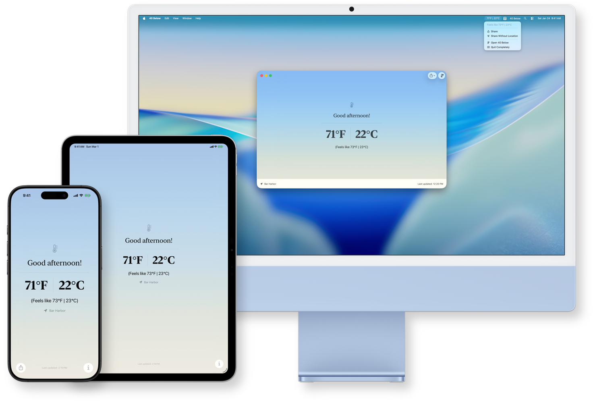

40 Below
Local Temperature in °F & °C

See the temperature where you are in Fahrenheit and Celsius, check the hourly forecast, and share a clean temperature card in seconds.
40 Below was designed and built around one central purpose: to show you the current outdoor temperature in both Fahrenheit and Celsius. Many of us have friends, family, and coworkers who live in other countries, and the simplest form of chit-chat can have some friction when those relationships cross the F/C border. 40 Below cuts through all of that. With its prominent temperature reading front and center, you're always a moment away from being able to tell someone what the weather is like in a temperature scale they will understand.
International teams, travelers, ex-pats, and mixed-unit households alike will all find utility in this handy little weather app.
Additional, thoughtful features:
- See the “feels like” temperature (also in ºF and ºC, funnily enough!)
- Check the temperature forecast for the hours ahead so you can plan out your day
- Share a beautifully rendered temperature card with or without your location
40 Below uses your location to show local conditions. You can control location access at any time in Settings.
What's New in Version 2.0
Thank you to everyone who has used and provided feedback on 40 Below! It's been a lot of fun building this little app, and there are some really fun additions and improvements in this version. The headliner, though, has to be Siri support!
With this update, there is now full Siri and Siri Shortcuts support in 40 Below. That means you can ask Siri, "What's the temperature in 40 Below?" and it will helpfully tell you in both Fahrenheit and Celsius for your current location. This works when you've got AirPods in and when your phone is hooked up to CarPlay! If you ask Siri, "Show me the weather in 40 Below", it will present a beautiful view right on the screen without having to open the app. Additionally, these things are scriptable! The Shortcuts app exposes these features so you can use them in your Shortcuts.
40 Below rarely prompts you for a review, so if you've found it useful and you have the time, a rating or review would be awesome and much appreciated.
NEW
- Added new Siri Shortcuts and improved action support for Shortcuts and Siri.
- Added a Siri forecast card.
- Added a daily forecast view alongside the hourly forecast.
- Added the ability to email support; check out the About sheet on iOS.
IMPROVED
- Fixed an issue where the forecast drag handle could respond to taps but not actual dragging.
- Improved reliability around location and weather refreshes.
- Improved loading behavior so progress stays visible until temperature and location details are fully updated.
FIXED
- Adjusted App Store links to fix an issue where the App Store was reporting 40 Below as "not available" in certain regions.
- Fixed an issue where temperatures might not update correctly after changing locations.
- Reduced unhelpful location error messages.